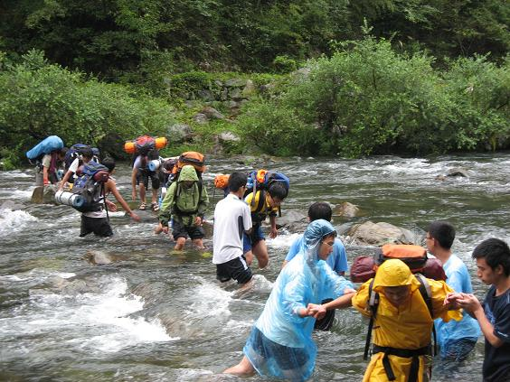

发信人: withoutU (风萧萧兮~), 信区: outdoor
标 题: 空山鸟语，溪行石上——记浙东溯溪之行
发信站: 饮水思源 (2010年10月06日00:52:08 星期三)
空山鸟语，溪行石上——记浙东溯溪之行
——BY 李伊人
21日晚，我们一行人悄悄启程。流月将波去，潮水带星来。踏着中秋前夜的月光，我
们沿着跨海大桥一路向南，在海面灯塔的星光作伴下，向目的地进发。
行过一段崎岖的山路，大巴车停在了我们扎营的地方——张辽村。西门的狗被我们惊扰了
梦境，在寂静之夜不知疲倦地叫唤。
乘着浓重的夜色，下车，分包，四散，扎营，等候黎明的来临。
screen.width - 200){this.width = screen.width - 200}">
翌日一早，我们便拔营启程。山间的空气清冽纯净，仿佛隔绝了城市的喧嚣。下行之
路有些许难行，路边流淌的浅浅水流使山路变得湿滑，于是脚步逐渐放慢。或许是要留心
脚下的路，抑或是被山里的景色吸引，人在路上总是寡言少语，大家鱼贯成一列，默默前
行。
screen.width - 200){this.width = screen.width - 200}">
下到涧底，我们跨过一条小溪，粗心大意的我不小心踏入溪中，溪水瞬间漫过跑鞋。
screen.width - 200){this.width = screen.width - 200}">
之后便是长长的上山路，我们行走在一条窄窄的土路上，路的两边是翠绿的不知名的草儿和低矮的小树，偶尔路滑时伸手扶一下，满手的清泥，却是大自然的味道。阳光偶然侵染
这条山间小路，从树叶的缝隙上渗到泥土里，滋养万物。或许是因为湿了鞋，每一步的山
路似乎更难走了，有时一不小心踏在细小的石头上，便与这山中清泥撞了个满怀。人本是
自然生，或许这样的亲密拥抱更能够诠释每一次出行的意义罢。
screen.width - 200){this.width = screen.width - 200}">
screen.width - 200){this.width = screen.width - 200}">
临近中午的时候，我们到达了谷底的一处浅滩，草草解决了午饭，换上溯溪鞋，我们
又重新背起行囊上路。
逢水下水，逢岩攀岩。记忆中是清澈见底的溪水，在双脚踏过尖利的石头后，轻轻带走
疼痛；攀着岩壁一点点前行，每当因害怕跌倒而犹豫时，前方总有人向你伸出手，搀扶你
攀过危险；当高大的岩石挡住去路，身后的队友会轻轻托起你的背包，减轻你的负重；水
深之处总能看到站在水中央的队友，提醒你踩好每一步。自然面前人总是渺小，可是在整
个队伍面前，自然也只能让步于我们。一路源溪行，忘路之远近。
screen.width - 200){this.width = screen.width - 200}">
screen.width - 200){this.width = screen.width - 200}">
秋风起兮秋叶飞，春花落兮春日晖。三点多的时候，天色渐渐阴沉，山间起风，提醒
行行不归的孩子们可以安家了。
刚扎下帐篷，天就开始下起小雨，我们组找了一避雨处，便做起饭来。组长zzm是削萝卜高
手，zmx学长是挂面高手，几个大男生做的晚餐，直馋得隔壁泡面组探头探脑，只可惜了鱼
香肉丝酱毁了一锅面，不过湖南来的组长倒是情有独钟。遮雨棚外下着雨，围坐在锅子边
上吃面，抬头看到的是苍翠的青山，低头能见流淌的溪水，这样的经历一辈子又能有几次
呢？晚餐之后的三国杀也别具特色，6、7个人围坐在一个T3里，戴着头灯，捧着手电筒，
杀得不亦乐乎。
一夜的雨，一夜的好梦。
经过一夜的风雨，溪水涨高了不少，水流一改昨日的温和，急行向下游奔去。出于安全考虑，向导决定带我们过溪后直接上山。队里许多人捶胸顿足，嚷着天公不作美，见不到那传说中的跳水潭。
虽说只是过溪，可是真的见到湍急的水流却不免有些犯怵。水最深的地方几乎漫到齐
腰深，双脚都无法从水中拔离出来，只得一脚深一脚浅地在水中挪动。协会里的几个男生
率先过溪，然后又折返回来，站在急速奔腾的水中央，伸出双手，为后面过溪的队员提供
保护，更有绅士的男生，将一名身体不适的女生背过河。我记得返校车上wh学姐说，她最
感动的便是过溪时，男生们主动站成一排，一个接一个地把大家渡到对岸，野协让人很感
动。
screen.width - 200){this.width = screen.width - 200}">
 screen.width - 200){this.width = screen.width - 200}">
恩，野协让人很感动，这也是我想说的话。
过了溪我们便向向导的家里进发，这时天空中下的是绵绵细雨，站在山口的我们向下
回望，看见的是烟雨朦胧中的羊肠小道和两边半熟的水稻，茂密的树林挡住了涧底的溪水
，只有水声依然在耳边，构成了我对浙东最后的记忆。
徒步、溯溪，这些词充满着神奇的魅力。背着行囊，翻越山坡，涉过溪河，即便双脚
因疼痛而叫嚣，每走一步都如踩针尖，依然沉默着隐忍。这便是行走的痛苦和快乐，除了
行在途中的人们，无人能够与你分享。带着一身瘀青回来的时候，朋友们无法理解，一个
女生为什么要这样“折磨”自己，殊不知，用脚去丈量每一寸大地，用心去记录每一帧的
风景，这便是行走的全部，这便是行走的快乐。
screen.width - 200){this.width = screen.width - 200}">
向导家腐败完之后，我们便启程返校了。一路上欢歌笑语，许多不善言辞的男生唱起
了歌，歌声中带着点淡淡的忧伤，象征着行程结束即将离别的伤感。但是我们不会结束的
，因为我们都爱着青山碧水，都爱用行走来诠释我们生命的意义，因为行走，我们永远同
路，可以相伴同行。
screen.width - 200){this.width = screen.width - 200}">
--
※ 来源:·饮水思源 bbs.sjtu.edu.cn·[FROM: 2001:da8:8000:f089:7463:3cf7:373b:b43]
※ 修改内容:·withoutU 于 10月06日00:55:48 修改本文·[FROM: 2001:da8:8000:f089:7463:3cf7:373b:b43]
※ 修改内容:·withoutU 于 10月06日00:56:10 修改本文·[FROM: 2001:da8:8000:f089:7463:3cf7:373b:b43]
※ 修改内容:·withoutU 于 10月06日00:57:49 修改本文·[FROM: 2001:da8:8000:f089:7463:3cf7:373b:b43]
※ 修改内容:·withoutU 于 10月06日01:00:39 修改本文·[FROM: 2001:da8:8000:f089:7463:3cf7:373b:b43]
※ 修改内容:·withoutU 于 10月06日01:19:14 修改本文·[FROM: 2001:da8:8000:f089:7463:3cf7:373b:b43]
|